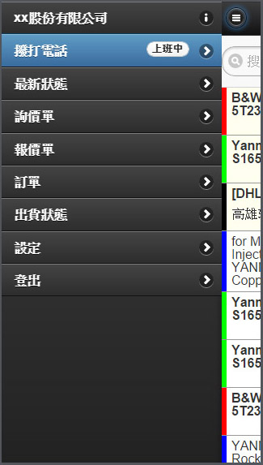
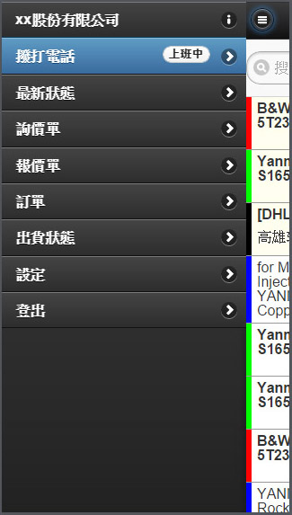

卡特斯 2007~2008 年
#html #css #js #php #mysql #企劃 #架構
支援IE6~8 + Firefox
(2008年9月2日 Chrome 測試版發佈)

台東大學資訊管理學系學士 (2003~2007)
https://github.com/maplenote
大多都是獨立作業或帶後輩
支援IE6~8 + Firefox
(2008年9月2日 Chrome 測試版發佈)
老闆說: 3 天可以完成購物商城 !
商城首頁 + 商品內容頁 + 購物車頁面
我燃燒了 7 天的生命...讓它蹦出來了
幫忙抓了一個漏洞
使用者可以偽造已經刷卡完成的驗證
之後串接過 PayPal (2011 年)


 


寫網頁是興趣! 其實都會碰!
只差在自學的速度跟不上整個範圍